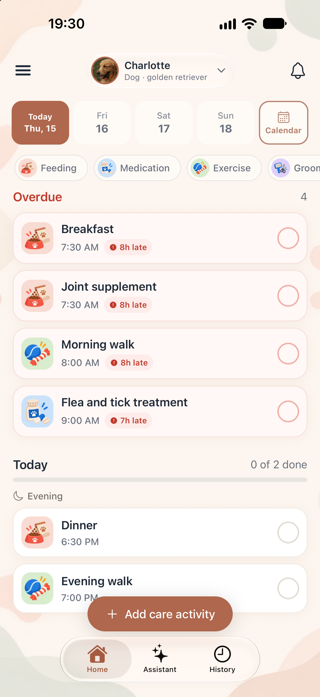

PETTO
DAILY CARE
Busy week. Full house.
Nothing missed.

Today's meals, meds and walks
on one screen.
Overdue tasks
rise to the top.
Tick it off in a tap
, so nobody feeds her twice.
Something new?
Add a care activity.
Free on iOS & Android
Link in bio